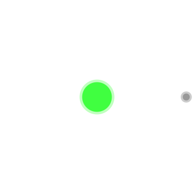

HTML5 et CSS3 sont des langages qui, utilisés ensemble, permettent une grande variété d’affichages. CSS, le langage de description de la mise en forme, a maintenant des capacités tellement étendues qu’il permet de faire facilement des animations :

Grâce à CSS, il est aussi possible de donner un peu plus d'interactivité à la page, par exemple au survol d'un élément par la souris, comme sur le paragraphe suivant :
Un élément particulier
En résumé, une grande partie des comportements que l'on peut prédéfinir pour l'affichage et la mise en page peut être gérée par CSS. Par contre, pour tout ce qui concerne les interactions avec l'utilisateur, il faut procéder autrement et utiliser le langage Javascript (JS), qui est un langage de programmation. Par opposition aux langages de description HTML/CSS, on peut l'utiliser pour programmer des prises de décision à partir de données fournies. Par exemple, il est possible de choisir une couleur de texte pour cette page avec les boutons suivants qui ont été configurés en JS :
Il est aussi possible de modifier le contenu HTML de la page et, par exemple, faire disparaître ou réapparaître l'image de l'atome ci-dessus avec le bouton suivant dont le message change :
On peut vraiment aller très loin... Par exemple faire disparaître la mise en page CSS... Cliquer sur le cercle ci-dessous pour s'en persuader (une fois l'effet constaté, pour revenir à l'état initial il faut recharger la page).